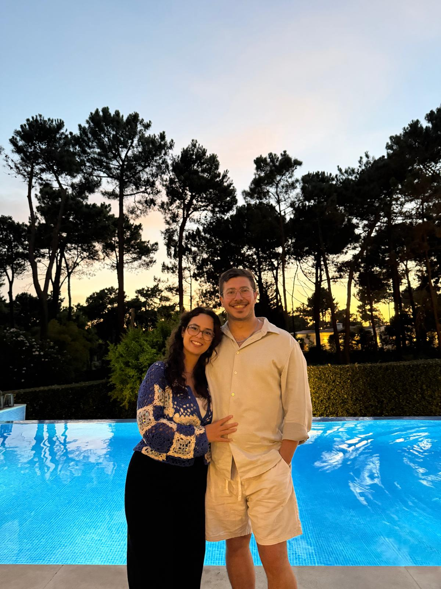
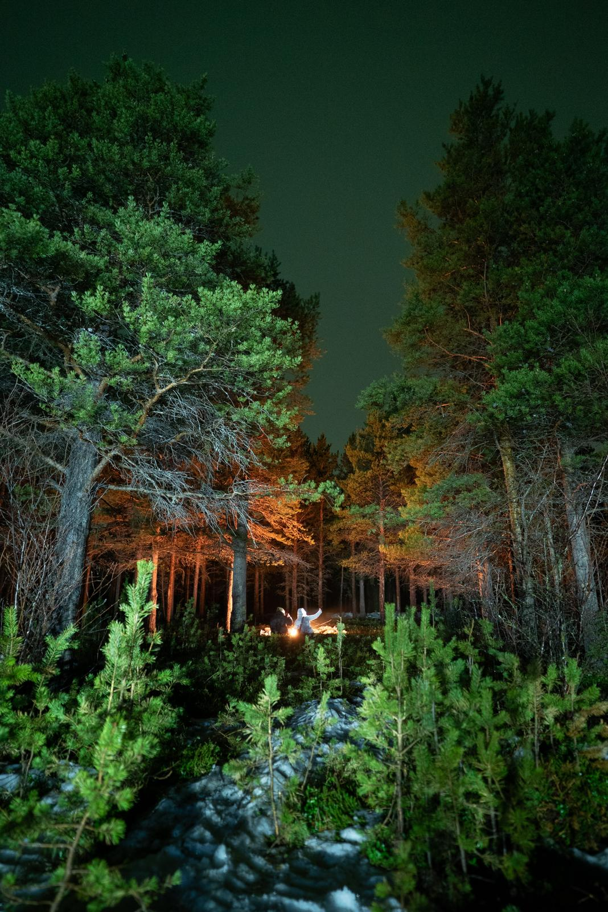
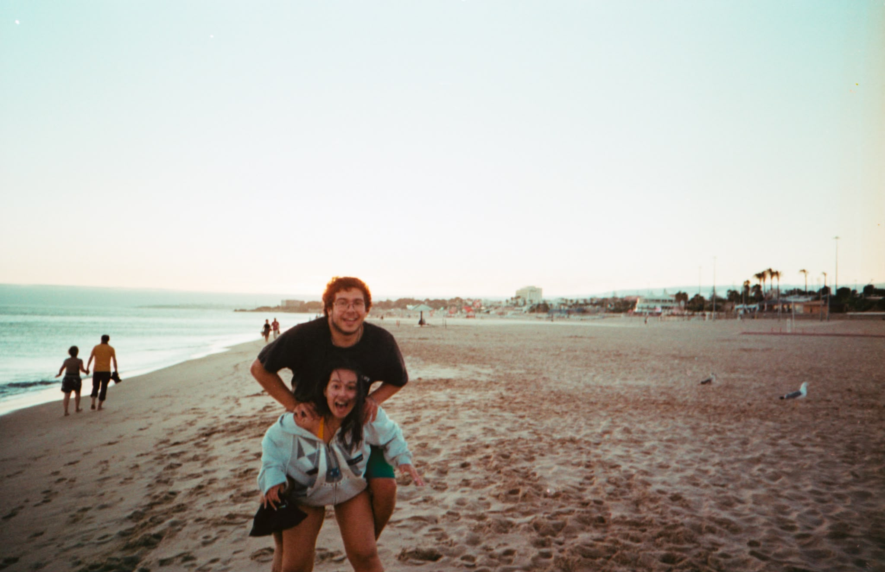
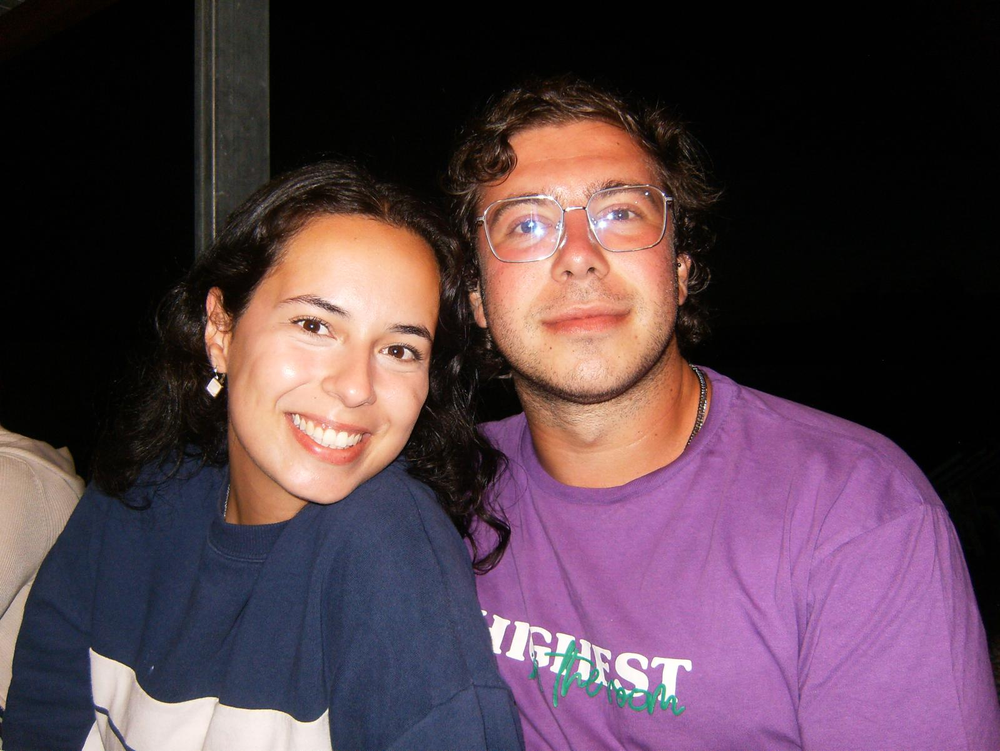
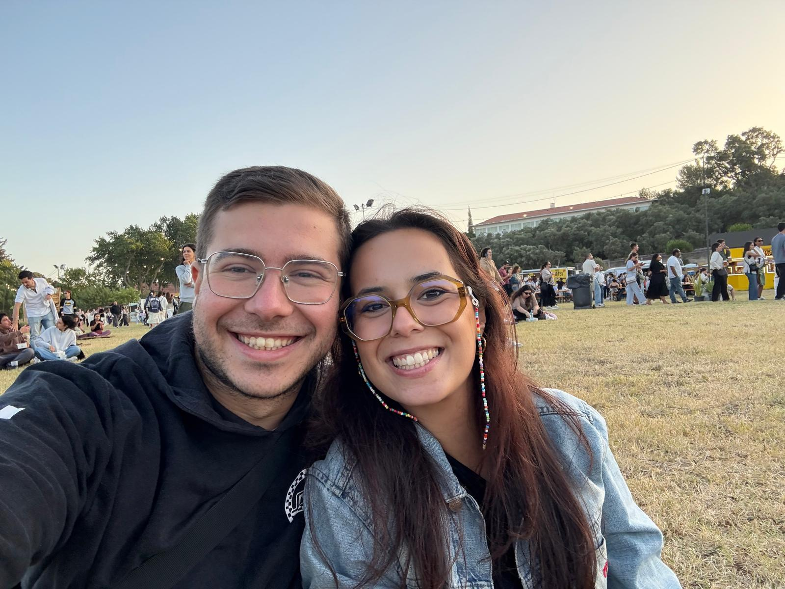
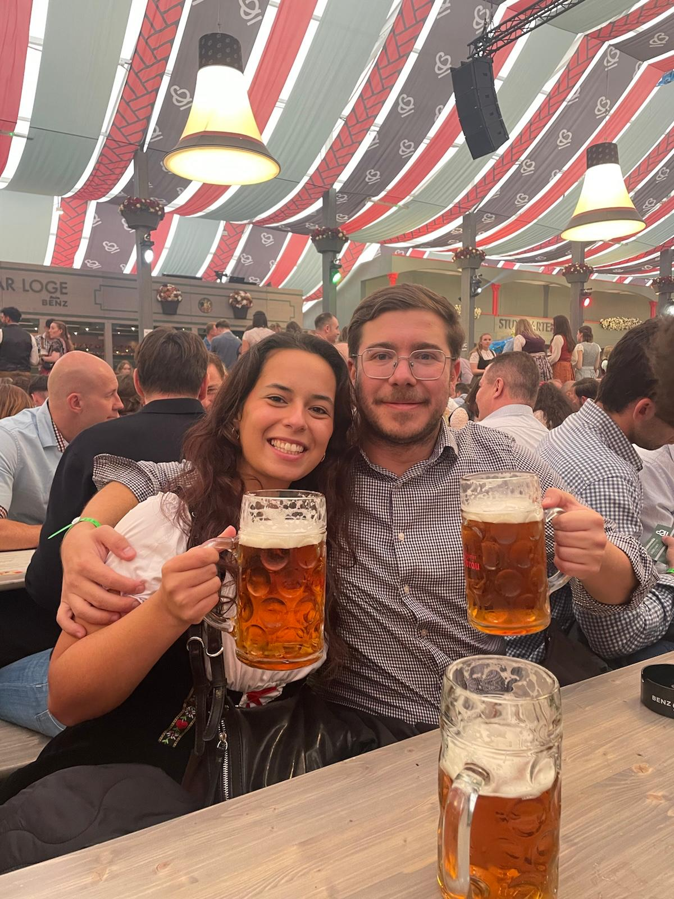
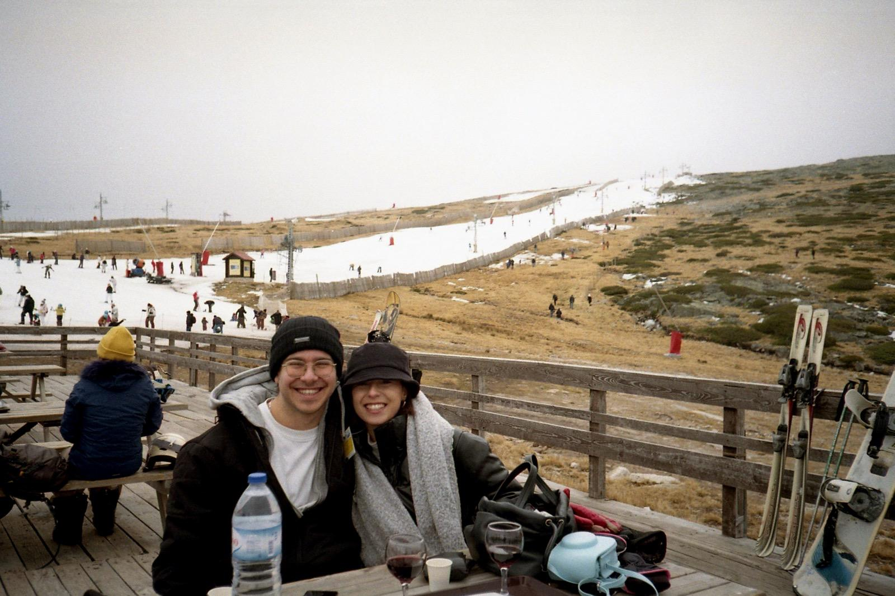
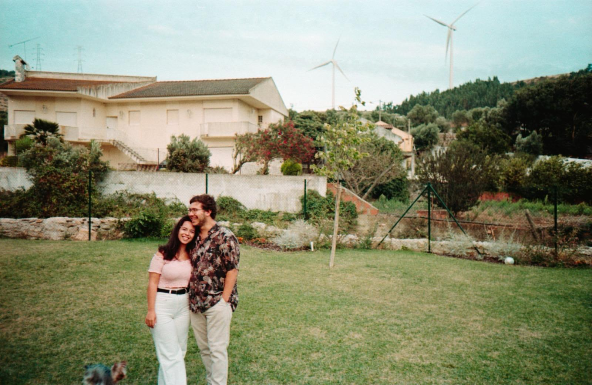
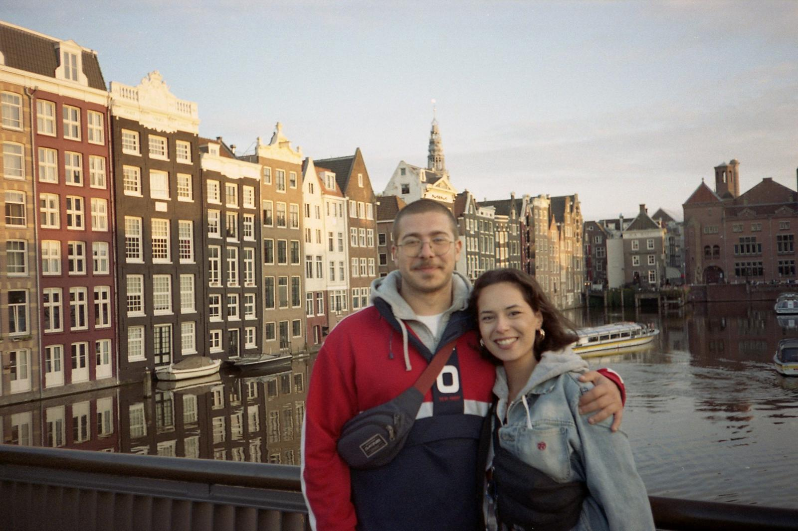

Vamos casar
Sábado, 30 de outubro de 2027
Basílica de Santa Quitéria, Meca · Quinta da Bichinha, Alenquer
Capítulo um
Uma pequena mostra do que já vivemos — vai crescendo à medida que formos escolhendo as fotos.









Capítulo dois
Sábado · 30 · 10 · 2027
Um roteiro para não perderem nada — horários sujeitos a pequenos ajustes.
Basílica de Santa Quitéria de Meca, Largo de Santa Quitéria, Meca, 2580. Ver no mapa
Quinta da Bichinha, Vila Chã, 2580-413 Ventosa, Alenquer. Um brinde para começar e tempo para os reencontros. Ver no mapa
Quinta da Bichinha. Sentamo-nos todos à mesa, com fome e com histórias para contar.
A festa vai das 14h às 4h da manhã, por isso venham com energia para dançar. Para o regresso, vejam as opções em Informação Prática, no cartão Transporte.
Capítulo três
Traje formal. Pedimos apenas que deixem o branco para a noiva.
Tanto a Basílica como a Quinta têm estacionamento mesmo em frente. É só chegar, estacionar e entrar.
Dúvidas de última hora? Liguem a qualquer um de nós — os contactos estão em Confirmar Presença.
Na região de Lisboa existem vários serviços de deslocação para depois da celebração.
Motorista. A pensar no conforto e na segurança de todos, a Star Drivers estará disponível durante todo o evento. O serviço pode ser feito no vosso próprio carro ou num serviço completo, com viatura e motorista. Para marcar ou saber preços, falem diretamente com o Tomás Estrela: 918 018 898.
Transfer. Para grupos maiores, há transfer em carrinhas com vários lugares entre os locais do casamento. Recomendamos a Bedriven pelo custo e pela conveniência. Reservas e informações diretamente com o fornecedor.
Para mais informações, ou em caso de dúvida, é só melgar o noivo!
Capítulo quatro
Escolham o local para ver o mapa e abrir o caminho no vosso telemóvel.
Basílica de Santa Quitéria de Meca, Largo de Santa Quitéria, Meca, 2580
Capítulo cinco
30.10.2027
Contamos convosco
Confirmem a vossa presença até 31 de julho de 2027, com uma chamada para um de nós.
Liguem a qualquer um de nós. Teremos todo o gosto em ouvir a vossa resposta!